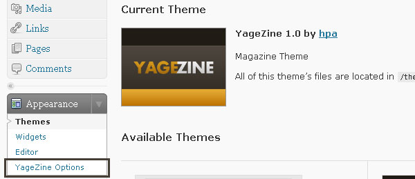

Upload "YageZine" folder to themes directory (/wp-content/themes/)
Install this theme
Click on image and click "Activate YageZine"
After Install this theme, go to "New Casino Mag Options" (Appearance -> YageZine Options)
And than, you can see the New Casino Mag Options
This is preview for Featured setting
This is preview for Sliding Panel
If you want add image on "sliding post" box and "featured post", don't forget add "Costum Fields" when you create post "thumbnail" for sliding image and "featured" for featured post.
For best resolution (image) use "205px * 160px" on sliding post and "304px * 190px" on featured post